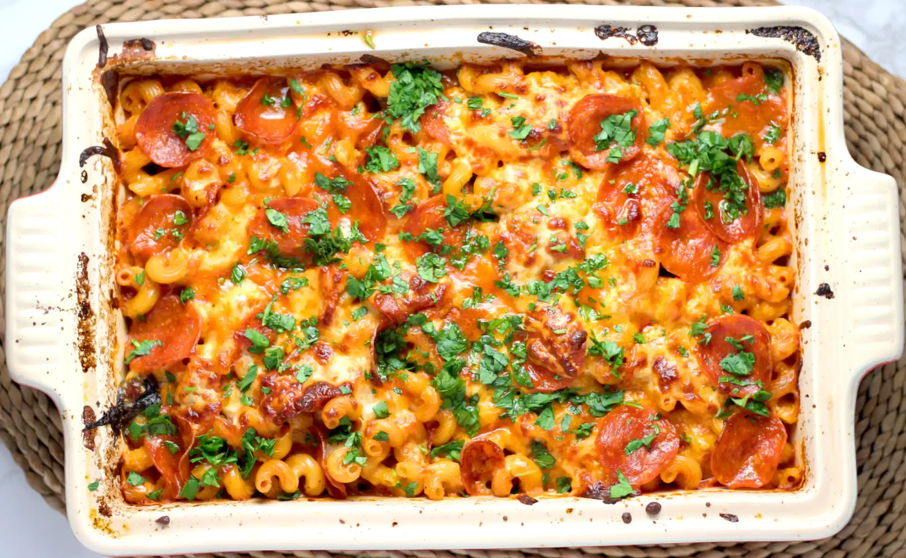

Lasagna

Description
Lasagna is a type of pasta, possibly one of the oldest types, made of very wide, flat sheets. Either term can
also refer to an Italian dish made of stacked layers of lasagna alternating with fillings such as ragù,
vegetables, cheeses, and seasonings and spices. The dish may be topped with grated cheese, which becomes melted
after baking. Typically cooked pasta is assembled with the other ingredients and then baked in an oven. The
resulting baked pasta is cut into single-serving square portions.
Ingredients
- lasagna sheets
- ground beef
- tinned tomatoes
- sliced mushrooms
- italian sausage
- ricotta cheese
- 3 eggs
- mozzarella & Parmesan cheese
- dried oregano, basil, & thyme
Steps
- In 10-inch skillet, cook sausage, onion and garlic over medium heat, stirring occasionally, until sausage is
no longer pink; drain.
- Stir in 2 tablespoons of the parsley, the basil, sugar, tomatoes and tomato sauce. Heat to boiling, stirring
occasionally. Reduce heat to low; simmer uncovered about 45 minutes or until slightly thickened.
- Heat oven to 350ºF. Cook and drain noodles as directed on package.
- In medium bowl, mix ricotta cheese, 1/4 cup Parmesan cheese, remaining 1 tablespoon parsley and the oregano.
- Spread 1 cup of the sauce mixture in ungreased 13x9-inch (3-quart) glass baking dish. Top with 4 noodles.
Spread 1 cup of the cheese mixture over noodles; spread with 1 cup of the sauce mixture. Sprinkle with 2/3 cup
of the mozzarella cheese. Repeat with 4 noodles, the remaining cheese mixture, 1 cup of the sauce mixture and
2/3 cup of the mozzarella cheese. Top with remaining noodles and sauce mixture. Sprinkle with remaining
mozzarella cheese and 1/4 cup Parmesan cheese.
- Cover; bake 30 minutes. Uncover; bake about 15 minutes longer or until hot and bubbly. Let stand 15 minutes
before cutting.
- To make this recipe ahead, cover unbaked lasagna with foil; refrigerate no longer than 24 hours to freeze up
to 2 months. Bake covered 45 minutes, then bake uncovered 15-20 minutes longer (35-45 minutes if frozen). Check
the center and bake a little longer if necessary until hot and bubbly.